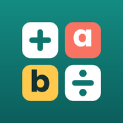
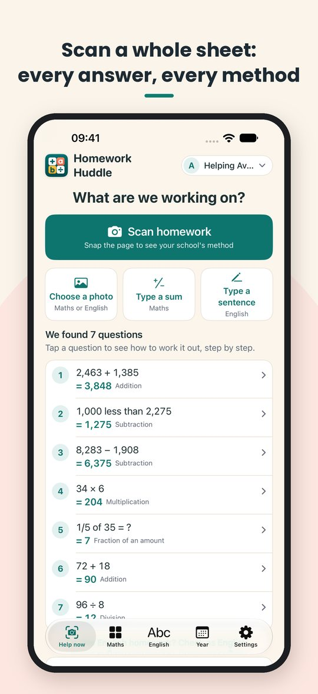
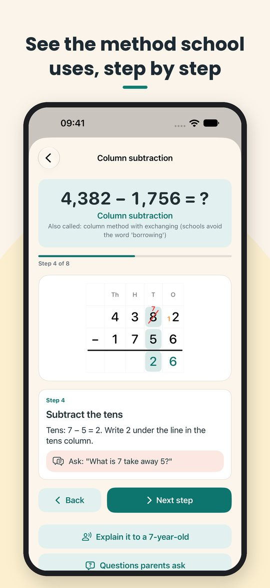
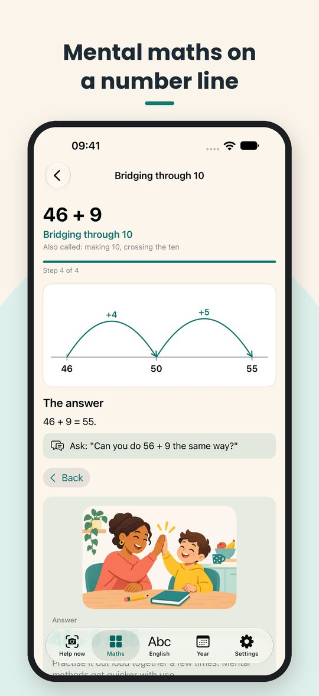
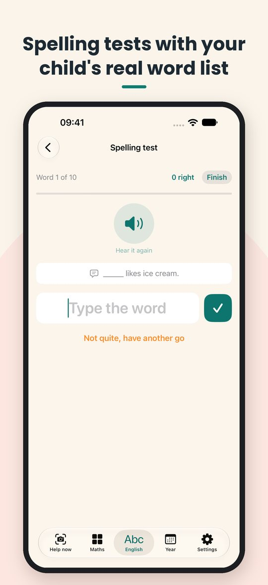
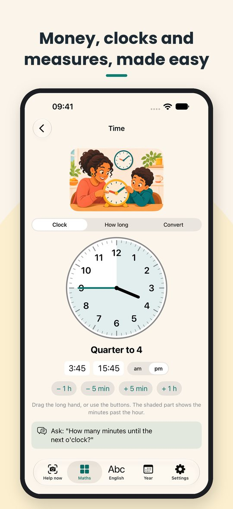
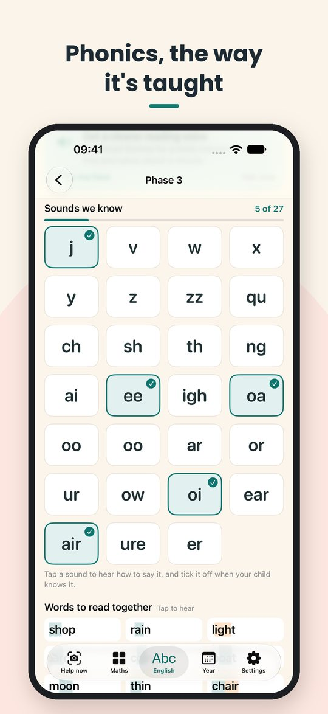
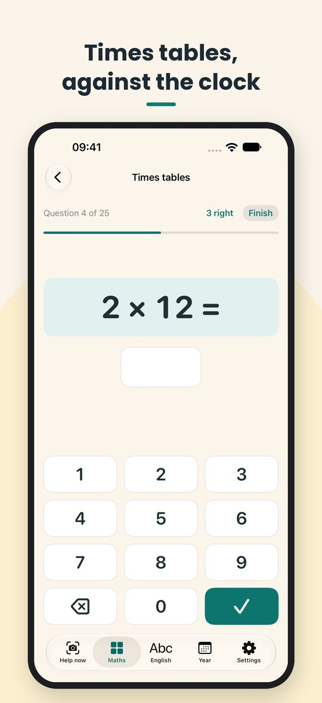
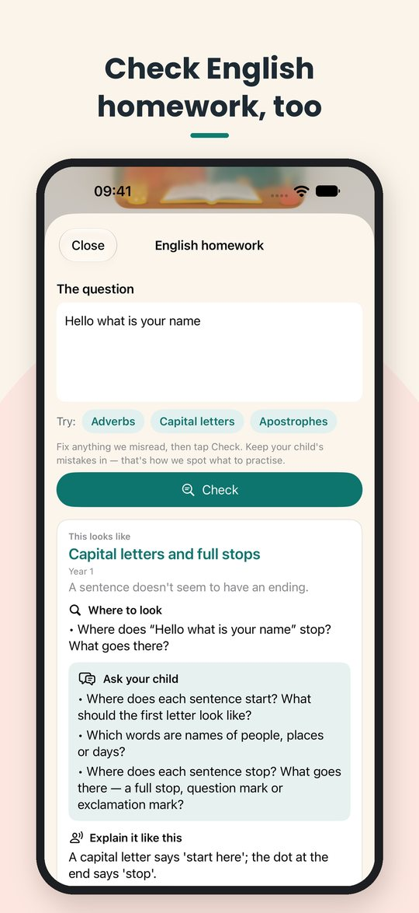

Homework HuddleSnap your child's maths or English homework. Homework Huddle reads the whole sheet, works out every answer and shows the exact method their teacher uses, one step at a time, so you can help them think it through instead of just giving the answer.
Get it free on the App StoreFor iPhone and iPad. Free to download, with optional Premium. British and American curriculum schools, at home or abroad.








Scan a page and the app works out whether it's maths or English. Every question is listed with its answer; tap one to see how to work it out.
Column addition and subtraction, the grid method, short and long multiplication, bus-stop division, chunking and long division.
Bridging through 10, partitioning and more, drawn as jumps your child will recognise from class.
Change from a little shop, clocks and how-long questions, converting kg, litres and metres, including mixed numbers like 2¼ m. Area, perimeter and fraction word problems too.
Read it, work out what we know, choose the operation, solve it and check the answer makes sense.
Your child's year word list read aloud in a sentence. Missed words come back next time.
Every table from 2 to 12, plus mixed, with gentle encouragement.
Every sound from Phase 2 to 6, tricky words and alien words for the Year 1 check.
Fronted adverbials, relative clauses, apostrophes and more. Type a sentence and check capital letters, apostrophes and adverbs.
A plain-English guide to Reception to Year 6, or Pre-K to Grade 5. Tap any line to open that topic.
Friendly read-aloud scripts with questions to ask, so your child does the thinking.
Every step is worked out by the app and checked against the real answer. Photos are read on your iPhone or iPad: no accounts, no tracking, no adverts.